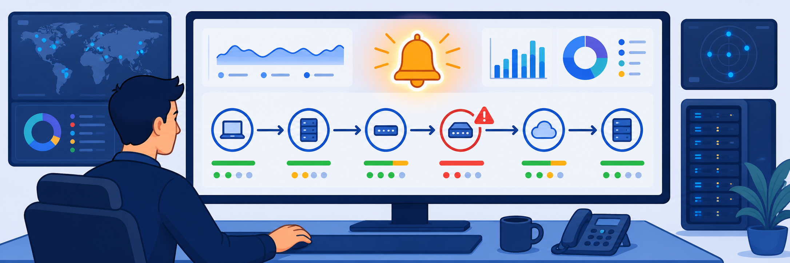

Lab 9: Automation using Zscaler APIs
Scenario: You aim to automate infrastructure management using the Zscaler OneAPI unified gateway. You configure OAuth 2.0 API clients in the Service Portal (formerly ZIdentity) and use Postman to create an App Connector Group programmatically, using Zscaler's secure, centralised API framework.
- Access Postman to prepare for API testing.
- Import the Zscaler OneAPI Postman collection.
- Gather the variables required for OneAPI authentication (base URL, client ID, client secret and customer ID).
- Authenticate and test OneAPI endpoints in Postman, and verify connectivity by running OneAPI requests.
- Create an App Connector Group through the OneAPI management endpoint to automate ZPA infrastructure setup.

In this task, you set up Postman to make API calls.
- Access Postman in a web browser, or download and install the Postman app:
- To use the web version, go to
https://www.postman.com/ - To install the app, go to
https://www.postman.com/downloads/
- To use the web version, go to
- Create a free account (or sign in):
- On Corp Client PC 1, open Postman, which is pre-installed on the desktop.
- Select Create Account and enter the required details.
In this task, you import the public Zscaler OneAPI collection into Postman so you can make API calls.
- Import the public Zscaler OneAPI Postman collection:
- Select the Home icon, then select Public API Network.
- In the search menu, type
Zscaler OneAPIand select the verified public API collection from the drop-down. - Right-click the Zscaler OneAPI collection and select Use / Fork.
- Enter a fork label of your choice.
- Under Environments to fork, select Zscaler OneAPI.
- Select Use Collection (Use / Fork Collection) to import the collection into your Postman workspace.
In this task, you gather the values Postman needs to authenticate an API call:
- The Authentication Service (formerly ZIdentity) BaseUrl
- The Client ID and Client Secret
- The Customer ID (not needed to authenticate, but required for ZPA API calls)
- Obtain the Authentication Service BaseUrl.
- Log in to the Experience Center console (
console.zscaler.com). - Select the menu toggle in the top-left corner and select Service Portal.
- Find the BaseUrl in the browser address bar and copy it (for example,
https://zs000XYZ.zslogin.net).Note: When you copy the BaseUrl, remove
/portalbefore adding it to the Postman authorization parameters.
- Log in to the Experience Center console (
- Create an API client to obtain the Client ID and Client Secret.
- In the Experience Center home page, type
API Clientsin the Search menu and select the matching option (Administration > API > OneAPI). - Select Add API Client and enter:
- Name:
TestClient - Status: Enabled
- Access Token Validity:
90Minutes
- Name:
- Under Client Authentication, set the Validation Type to Secret.
- Select Add.
Note: A secret is generated automatically and displayed with a validity period between 30 and 365 days.
- Save the client credentials.
- Copy the secret and save it in a local text file.
Warning: You can't view the secret after you select Save; secrets are displayed only once, at creation. You can keep a maximum of two client secrets; if you add a third, it replaces the most recent secret.
- On the Resources tab, review the available Zscaler services and scopes.
- Select the Super Admin role for ZCC and ZIA. For ZPA, select the API Full Access role.
- Select Save.
- Verify that the new API client appears in the list with its Client ID.
- In the Experience Center home page, type
- Obtain the ZPA Customer ID to call the ZPA OneAPI.
- In the Experience Center, type
Linked Servicesin the Search menu and select the matching option (Administration > Subscription). - Find your ZPA Tenant ID (the Customer ID).
- In the Experience Center, type
In this task, you use Postman to authenticate and test OneAPI endpoints, verifying communication with the Zscaler cloud.
- Authenticate the OneAPI collection.
- In the Environments section, select Zscaler OneAPI, then go to the variables table.
- Update the following variables with the values from Task 9.3:
zIdentityBaseUrl: from Step 1c (for example,https://zs000151.zslogin.net)clientSecret: from Step 2fclientID: from Step 2jcustomerId: from Step 3b
- Select the Authorization tab, scroll down, and select Get New Access Token.
- In the Manage Access Tokens window, select Use Token.
- Verify the token and test connectivity.
- In the Experience Center, type
Tokensin the Search menu and select the matching option (Administration > API > OneAPI). - To verify an active token, copy the Client ID and paste it into the search field (top right), or set the Issued At filter to Last 15 Minutes to see recently issued tokens.
- In Postman, expand Zscaler Client Connector › Devices › Get all enrolled devices.
- Select Send and verify that the status code is 200 OK.
- Run the GET request Download device details as a CSV file and verify the response status.
- In the Experience Center, type
In this task, you create a ZPA App Connector Group programmatically.
- Check the existing App Connector Groups. In the Experience Center home page, type
App Connector Groupsin the Search menu and select the matching option (Private Access > Private Infrastructure > App Connectors) to view the existing groups. - Configure the API request in Postman.
- In Postman, go to Collections › Zscaler OneAPI › Zscaler Private Access (ZPA) › Enrollment Certificate Controller › Get all configured enrollment certificate details for the specified customer.
- Select Send.
- In the Body tab of the response, find the
id. You use that value in the request body that creates the App Connector Group.
- Create the App Connector Group.
- Go to Collections › Zscaler OneAPI › Zscaler Private Access (ZPA) › Connector Group Controller › Add a new App Connector Group for the specified customer.
- Select the Body tab and enter the request body below.
Note: Update the
signingCertIdvalue in the payload with theidyou found in Step 2c.{ "name": "ZPALAB APPC Group", "description": "App Connector training Lab at San Jose", "latitude": "37.3382032", "longitude": "-121.886286", "location": "San Jose, CA, USA", "signingCertId": "7877" }Note: For the full request-body reference, see App Connector Group Management in the Zscaler API documentation (linked in the sidebar). Make sure your API client is active and the access token hasn't expired.
- Select Send to call the API endpoint and create the App Connector Group.
- Check for the response code 201 Created, which confirms the group was created.
- In the Experience Center, type
App Connector Groupsin the Search menu and select the matching option to verify that the new group exists.